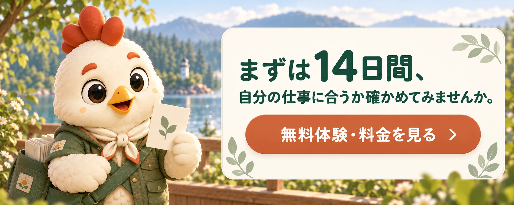

01 / READ
毎週の資料を、自分のペースで読む
今週のAI情報を整理したPDFを、会員ページからブラウザで閲覧・ダウンロードできます。
SERVICE ｜ たより｜TAYORI
情報は増えるのに、仕事でどう使うか迷ってしまう。
TAYORIは医療・介護などの専門職に向けて、大切な話題と短い解説を毎週お届け。今週、試したいことを見つけるきっかけに。
月額980円（税込）／初回14日間無料
決済情報の登録が必要です。無料期間中に解約しない場合、終了後は月額料金が自動で請求されます。
WHAT YOU GET


対象の有料動画を視聴し、セミナーで学べます。
ToToNoE+運営メンバーのセミナー
追加料金なし
外部講師のセミナー
TAYORI会員は別途料金／IROHA会員は追加料金なし
MEMBER EXPERIENCE
TAYORIの会員ページでは、今週の資料を読み、質問を整理して送り、公開された回答動画から学べます。
以下は実際の会員ページの構成をもとにした公開用の画面イメージです。誌面・質問・動画の内容は見本で、実際の会員投稿や配信済み資料ではありません。
今週のAI情報を整理したPDFを、会員ページからブラウザで閲覧・ダウンロードできます。
週1枠の質問フォームで、状況から聞きたいことまで順番に整理して送れます。個別回答を保証するものではありません。
公開された回答動画は、質問内容を見ながらテーマ別に探せます。

PLAN
申込時に決済情報の登録が必要です。14日間の無料期間中に解約手続きを完了しなかった場合、期間終了後から月額980円（税込）が自動で請求され、以後毎月自動更新されます。解約は会員の契約管理画面から手続きできます。
14日間の無料体験を申し込む新規受付は毎週土曜6:30〜日曜23:30（日本時間）、土日合計10名まで。満席後はウェイトリストへご登録いただけます。
受付状況を確認しています…
法人が人数枠を契約し、必要なメンバーだけ登録できます。チーム内で同じテーマを共有し、学びや研修のきっかけにできます。
10名枠ごとに月額8,000円（税込）。個人プラン10名分の月額9,800円と比べ、10名枠あたり1,800円お得な料金案です。
| プラン | 利用人数 | 月額（税込） |
|---|---|---|
| Team 10 | 10名まで | 8,000円 |
| Team 20 | 20名まで | 16,000円 |
| Team 30 | 30名まで | 24,000円 |
| Team 50 | 50名まで | 40,000円 |
| Team 100 | 100名まで | 80,000円 |
| Enterprise | 101名〜 | 個別相談 |
現時点の料金案です。表にない40名・60〜90名も、10名単位で月額8,000円ずつ加算する想定です。契約人数の範囲内で、利用したいメンバーだけ登録できます。
法人向け支援は準備中FAQ
対象の有料動画を視聴できます。ToToNoE+運営メンバーによるセミナーは、TAYORI・IROHA会員ともに追加料金なしで参加できます。外部講師によるセミナーはTAYORI会員には別途料金が必要ですが、IROHA会員は追加料金なしで参加できます。対象となる内容は各回の案内でお知らせします。
初回14日間の無料期間中に解約しない場合、終了後から月額980円（税込）が自動で請求され、毎月更新されます。解約はマイページの契約管理から手続きできます。
法人向けは準備中です。契約人数の範囲内で、利用したいメンバーだけ登録するプランを予定しています。
いいえ。個別回答サービスではありません。コンテンツ制作テーマとして優先的に検討します。
個人・法人を特定できない形に整理した上で、つまみ｜TSUMAMI等として活用する場合があります。